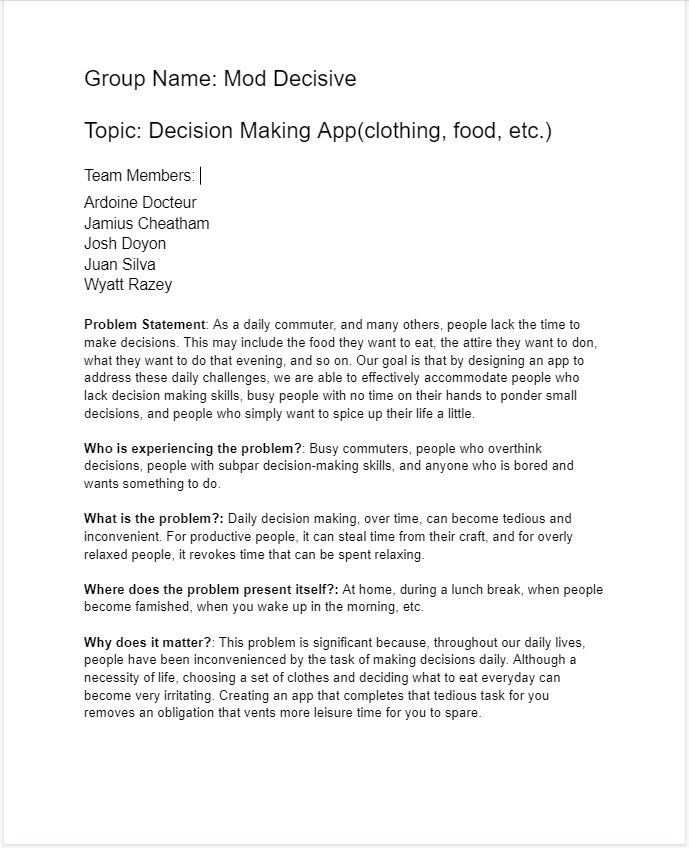
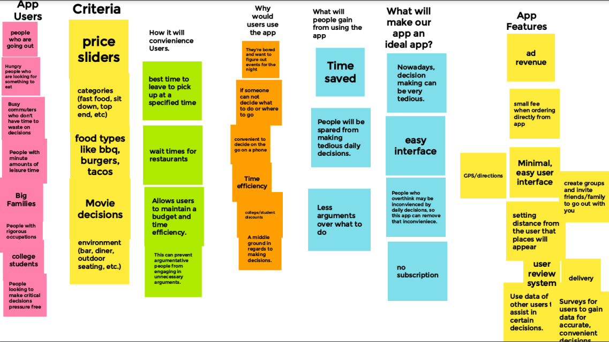
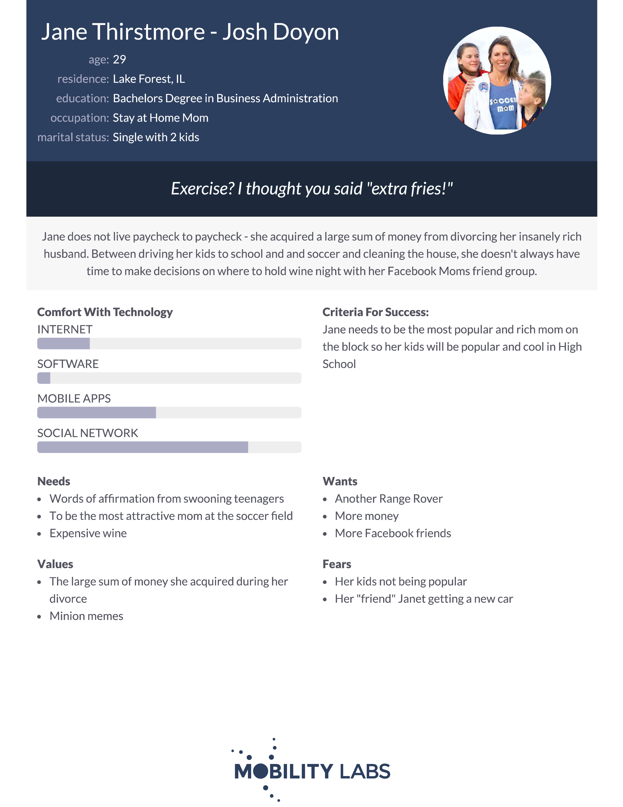
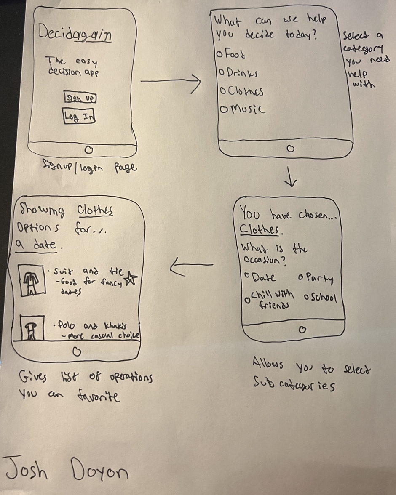
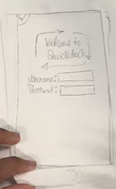

As a daily commuter, and many others, people lack the time to make decisions. This may include the food they want to eat, the attire they want to don, what they want to do that evening, and so on. Our goal is that by designing an app to address these daily challenges, we are able to effectively accommodate people who lack decision making skills, busy people with no time on their hands to ponder small decisions, and people who simply want to spice up their life a little.

As a group, we put our minds together to come up with ideas for how the app could look, different parameters the user can input, and why the app would be useful to consumers.

The persona of the average person that would use our food decision-making app.

The sketches of how our decision-making app may look including the full user interface and flow of screens on the app.

A walkthrough made of paper to demonstrate how a user will navigate the app.